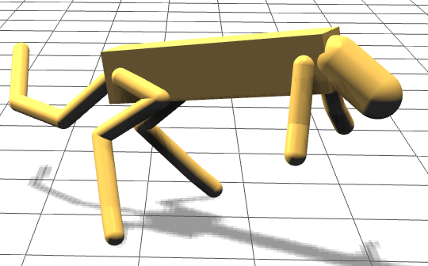
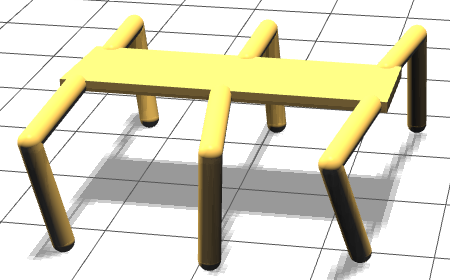
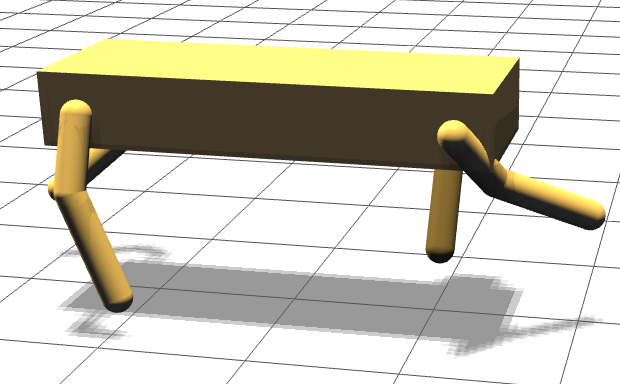

Welcome to the WebGL Visualizer
Purpose:
Many researchers in evolutionary robotics and artificial life produce videos to communicate concepts and results from their research. However, videos are often limited to what the author chooses to share through specific angles or edits. We propose to change the communication medium from a prerecorded video to a playback of the actual evolved results through the visualizer shown in this demo. Viewers can freely move the camera around the robot, changing perspective while observing the results. In addition, color and transparency of individual parts and playback speed can be altered to better understand specific aspects of the evolved results. Results are visualized using WebGL, a browser based implementation of OpenGL, allowing for playback on most modern browsers without the need to install or configure additional software. Through a common file standard, different physics engines can be used to conduct the research, but still be shared among the broader research community, eliminating one of the hassles currently facing the community.
Instructions:
The interface is composed of a playback bar at the bottom of the screen. Here you will find common buttons such as play, pause, forward and reverse. The play speed can be adjusted for slow motion or to speed up. The current time of the playback is displayed on this bar to the left. Change individual component colors by selecting it from the dropdown and then selecting a color from the color picker to the right.
Navigation around the demo is done with the mouse. Clicking and holding the left mouse button allows for pivoting the camera around the main body of the robot. Zooming is handled with the scroll wheel. Panning up and down is done by holding down the right mouse button and sliding up or down. Left/right panning is currently disabled unless the playback is paused as the camera tracks the motion of the main body of the robot.
Start Here:
A select few demos are available for viewing currently: (Click to select one.)
Note to Safari Users: You may need to enable WebGL, see how
here


